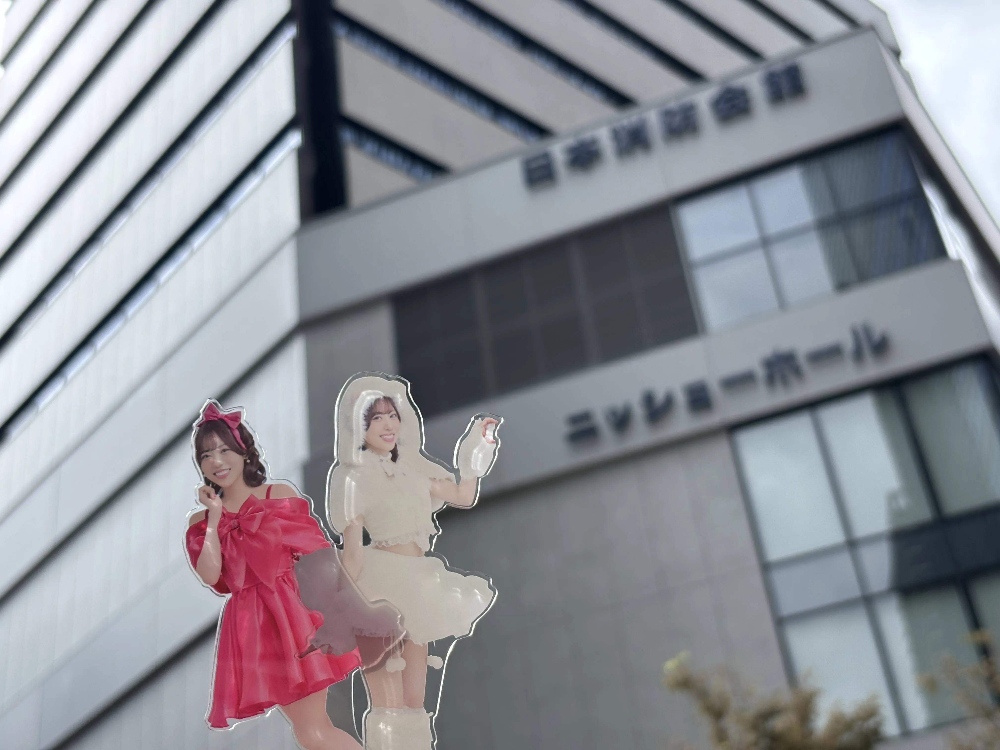
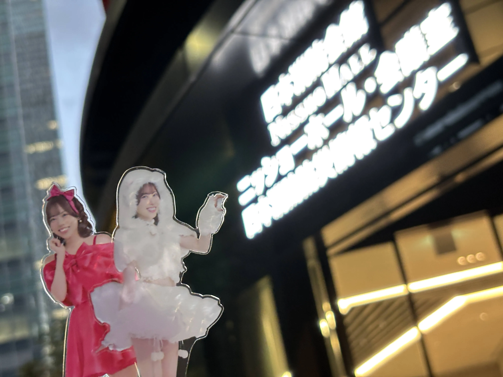

伊達さゆりさんのファンミーティング、東京公演に参加しました。
会場は昨年と違い東京、虎ノ門のニッショーホール。
そして今年は昼と夜の2公演…！
勿論僕はどちらも参加しました。
昼公演は2階席
感想に入る前に懺悔したいのですが、公演スペース外の所お誕生日メッセージみたいなものを動画で送ろうみたいな企画があったのですが、緊張をしてしまい変な事を言ってしまいました…苦笑。
今となっては笑える内容なのでまだ良かったですが…
という事で感想をつらつらと書いていきますね。
今年は昨年と違って推しとの距離がとても近かったですね…良くも悪くも…。
特に借り物競走と缶バッジプレゼント企画では伊達さゆりさん本人が我々客席まで降りてわざわざ来てくれるという事がありました。
これに関しては正直書くと嬉しいとは思いつつ、推しはヲタクとの距離が遠い、言い換えると「こちら側の人間には手が届かない存在だから尊い」と思っている節が僕にはあるのでなんともなあ、と思ってしまいました…苦笑
ただ推しが自身でやってみたい！やりたい！と思った事ならば僕はそれを応援しようというのも間違い無い事実なのでこれからも応援をしていくのだろうな、と考えました。
因みに2階席でも周りのヲタクがプレゼント企画で当選しており、近くまで来てくれました…！
僕はかすりもしなかったですが…笑
そんな事を考えているうちに夜公演。
基本的に構成は一緒だったのですが、最後に重大発表…！
伊達さゆりさん、来年2026年よりソロアーティストデビュー…！
正直このタイミングで発表されるとは思っていなかったので驚きました…笑
発表事項としては、ミニアルバム発売、1stライブ実施でした。
何はともあれ、さゆりんお誕生日おめでとう。